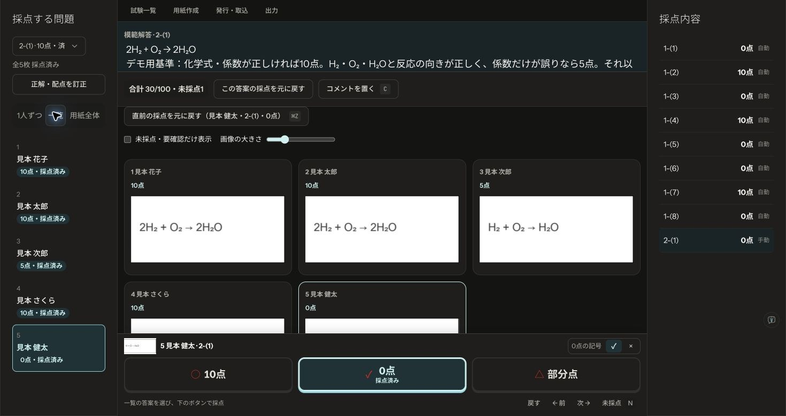

Grade paper tests
on your computer
Scoring64 is grading software for teachers. Import the scanned answers: bubbles are graded automatically, and written answers on screen or with AI.

From scanned answers to marked papers in one app
Import
Import the PDF of a worksheet you made in Word or Excel, and Scoring64 finds the answer boxes.
Grade
Bubbles are graded automatically. Written answers are graded on screen, one question at a time.
Hand back
Export a marked PDF for each student, with a score sheet alongside.
Let AI grade
written answers
Give Codex or Claude Code the answer key and your rubric, and it marks the answers. You review the results before handing them back.
AI grading works through a plugin that connects to an outside AI service. That service's fees and limits apply, and the answers the AI reads may be sent to it.
Regular on-screen grading and bubble reading stay on your computer.
Free for 2 tests a month
Every feature, with no limit on students.
Scoring64 is in English on Windows and Mac from version 1.2.0.
Scoring64 is made by Fermion Inc., a small software and typesetting company in Shibuya, Tokyo, run by students at the University of Tokyo. Questions in English or Japanese: contact@fermion.company